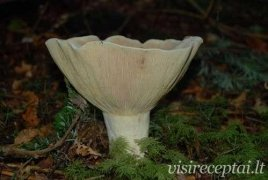

Ledai | La Maistas
2020.10.29 08:57

TV IDĖJOS RECEPTAI KONKURSAI RECEPTAI PAGAL TIPĄ Helovinas Valgome sveikiau! Grilio patiekalai Apkepai Blynai, sklindžiai Desertai Gėrimai Gėrimai su alkoholiu Karšti patiekalai Uogienės Konservuoti patiekalai Košės, tyrės Kremai ir padažai Picos Pyragai, kepiniai Salotos, mišrainės Sriubos Sumuštiniai Troškiniai Užkandžiai Vaikams Vegetariški Be glitimo Linksmieji sausainiai Raganų piršteliai Grikių troškinys su vištiena Atsiųsk savo receptą Patiekalo tipas Helovinas Valgome sveikiau! Grilio patiekalai Apkepai Blynai, sklindžiai Desertai Gėrimai Gėrimai su alkoholiu Karšti patiekalai Uogienės Konservuoti patiekalai Košės, tyrės Kremai ir padažai Picos Pyragai, kepiniai Salotos, mišrainės Sriubos Sumuštiniai Troškiniai Užkandžiai Vaikams Vegetariški Be glitimo Pagr. ingredientas Aviena Bulvės Daržovės Grybai Jautiena Kiauliena Kiaušiniai ir pieno produktai Miltai ir kruopos Soja Veršiena Vaisiai ir uogos Žvėriena Paukštiena Makaronai Šokoladas Žuvis ir jūros gėrybės Riešutai Proga Mamos dienos skanėstai Gardumynai Tėvo dienai Velykiniai patiekalai Valentino dienai Kalėdų patiekalai Kūčių patiekalai Gimtadienio patiekalai Joninių skanėstai Helovinas Vestuviniai patiekalai Pasaulio virtuvė Airijos virtuvė Amerikos virtuvė Anglijos virtuvė Argentinos virtuvė Armėnijos virtuvė Austrijos virtuvė Baltarusijos virtuvė Brazilijos virtuvė Bulgariška virtuvė Danijos virtuvė Graikijos virtuvė Gruzijos virtuvė Indijos virtuvė Ispanijos virtuvė Italijos virtuvė Japonijos virtuvė Kinijos virtuvė Korėjiečių virtuvė Lenkijos virtuvė Lietuvos virtuvė Maroko virtuvė Meksikos virtuvė Norvegiška virtuvė Olandijos virtuvė Prancūzijos virtuvė Rusijos virtuvė Švedijos virtuvė Šveicarijos virtuvė Slovakijos virtuvė Suomių virtuvė Tailando virtuvė Tibeto virtuvė Totorių virtuvė Turkijos virtuvė Ukrainos virtuvė Vengrijos virtuvė Vokietijos virtuvė Latvijos virtuvė Čekų virtuvė Ledai (receptų: 129) Bananų ir ananasų ledai per 1 minutę! Naminiai vaniliniai ledai Sveiki mango ledai iš dviejų ingredientų Greiti grietinėlės ir kondensuoto pieno ledai Sveikuoliški kivių ledai Gaivūs naminiai braškiniai-jogurtiniai ledai be cukraus Greiti bananų ir abrikosų ledai Naminiai karameliniai ledai - tik 2 ingredientai! Braškiniai grietinėlės ledai Mangų ir melionų granita Naminiai ledai su grietine, citrina ir medumi Greiti šaldytų uogų ledai Kokosų pieno ledai su mangais Natūraliai saldūs grietinėlės ledai Veganiški braškiniai ledai su bazilikais Šokoladiniai bananų ledai be cukraus - tik 2 ingredientai! Kavos skonio ledai su šokoladu Greitas uogų šerbetas Indiški cinamoniniai ledai iš trijų ingredientų Avietiniai ledai be pieno produktų ir kiaušinių Arbūzų ir kivių ledai be cukraus Maistingi jogurtiniai ledai su uogomis tik iš penkių ingredientų Naminis ledų tortas per 20 minučių Veganiški ledai su mango Naminiai kreminio sūrio ledai per kelias minutes Naminiai šokoladiniai ledai be cukraus ir pieno produktų Ledai „Tuti fruti“ su avietėmis Naminiai mango ir bananų ledai be cukraus Karameliniai ledai - du ingredientai Sveiki avokado ir bananų ledai Sveiki naminiai arbūziniai ledai Ledų formos želė su uogomis Naminiai šokoladiniai ledai Naminiai miško žemuogių ir citrinų ledai Kokosiniai ledai su mangais ir čija sėklomis Burnoje tirpstantys Nutellos ledai Naminiai maskarponės sūrio ir kondensuoto pieno ledai Naminiai braškiniai - grietininiai ledai su kondensuotu pienu Gaivūs arbūzo ledai be cukraus 4 ingredientų braškių-mėlynių ledai Greiti naminiai ledai su braškėmis ir šokoladu Greiti jogurtiniai ledai su braškėmis (be cukraus) Pistacijų ledai Naminiai ledai Pina Colada - sveiki ir greitai pagaminami Rodyti daugiau receptų Kraunama...
Draugaujam ?
LaMaistas.lt © 2020
Receptai Naujienos Konkursai Privatumo politikaKontaktai
Turinio klausimais rašykite:
[email protected]
(darbo laikas nuo 8 iki 17 val.)
Reklama
Reklamos klausimais rašykite
[email protected]
(darbo laikas nuo 8 iki 17 val.)
All Media Digital
- ledai - išsamiai DELFI.lt
- Ledai - parduotuve.ciamarket.lt
- Dadu – Ice cream from natural milk
- Ledai - Intermarket
- Ledai | La Maistas
- Desertai: Ledai - 1000receptų.lt
- Ledai - Vaida Kurpienė
- Ledai - Sraigė ir Varlė
- Naminiai ledai – 10 paprastų receptų – Gimtadienio mugė
- DIONE ledai Klaipėdos pienas AB - Pricer.lt
- ledai - išsamiai DELFI.lt
Pradžia / Ledai Mango ledai su kokoso pienu ir šokoladu Vaida Kurpienė 2020-09-17T11:04:50+03:00 2020-07-01 | Kategorijos: Desertai , Ledai , Sveiki receptai | Žymos: kokosų pienas , Mango , vaisiai |
- Ledai - parduotuve.ciamarket.lt
Irvyda 2020-09-26T09:51:21+03:00 2019-06-27 | Kategorijos: Desertai, Ledai, Sveiki receptai | Žymos: Arbūzas | 0 komentarų Pasidalinkite! Facebook LinkedIn Pinterest El. pašto adresas
- Dadu – Ice cream from natural milk
Ledai MAGNUM WHITE su baltojo šokolado ir sausainių įdaru, 300 g. €5,49. €3,84 €12,80/kg-30%. Ledai MAGNUM WHITE su baltojo šokolado ir sausainių įdaru, 300 g. KARTU REKOMENDUOJAME. Vanil. plombyras BALTOJI VARNELĖ su karamele ir sausainiais, 550 g. €5,99. €3,59
- Ledai - Intermarket
BALTOJI VARNELĖ Ledai vaikams ir Ateiviams Vanilinis plombyras su zefyriukais ir sproginėjančiais saldainiais 120ml 12.42€ už 1 litrą Kaina 1,49 € Į krepšelį
- Ledai | La Maistas
Ledai vafliniuose puodeliuose - vieni populiariausių valgomųjų ledų Lietuvoje bei kitose Pabaltijo valstybėse. Tai vaflinis indelis, užpildytas įvairių skonių ledų mase. Gali būti su įdaru (pavyzdžiui braškių uogienės), glaistu (pavyzdžiui šokolado) bei kitokiais priedais (riešutais, šokolado drožlėmis ir pan.). Mūsų asortimente rasite įvairiausių skonių ledų ...
- Desertai: Ledai - 1000receptų.lt
Ledai DIONE kavos skonio šokoladiniai 100ml. 1.05€ Ledai JUNGA mėlynių ir citrinų skonio 75 ml. 0.56€ Ledai LIONDELUX su vyšnių įdaru 130ml. 1.17€ Ledai Popcorn caramel Baltoji varnelė 950 g. 6.89€ Ledai vanilės skonio BONUS 120ml. 0.35€ Kaip pirkti? ...
- Ledai - Vaida Kurpienė
Ledai. 1 - 3 iš 3 Džersių pieno šokoladiniai ledai Minioti, be pridėtinio cukraus, 125 ml ...
- Ledai - Sraigė ir Varlė
Ledai – iš pieno produktų (pieno, grietinės, grietinėlės) pagamintas ir sušaldytas saldus desertas. Ledais vadinami ir šaldytų sulčių desertai.
- Naminiai ledai – 10 paprastų receptų – Gimtadienio mugė
Sveiki mango ledai iš dviejų ingredientų Greiti grietinėlės ir kondensuoto pieno ledai Sveikuoliški kivių ledai Gaivūs naminiai braškiniai-jogurtiniai ledai be cukraus Greiti bananų ir abrikosų ledai Naminiai karameliniai ledai - tik 2 ingredientai! ...
- DIONE ledai Klaipėdos pienas AB - Pricer.lt
Naminiai ledai – dalykas šaunus, man labai patinka, kad bent dalį amžino vaikų ledų troškulio galiu numalšinti sveikesniu namuose ruoštu desertu, į kurį tikrai žinau ko, kaip ir kiek įdėjau. O kadangi vasara jau siunčia saulėtus pažadus, ledų sezonas įsibėgėja – pats metas į vieną būrį surinkti naminių ledų receptus.
Pradžia / Ledai Mango ledai su kokoso pienu ir šokoladu Vaida Kurpienė 2020-09-17T11:04:50+03:00 2020-07-01 | Kategorijos: Desertai , Ledai , Sveiki receptai | Žymos: kokosų pienas , Mango , vaisiai |
Irvyda 2020-09-26T09:51:21+03:00 2019-06-27 | Kategorijos: Desertai, Ledai, Sveiki receptai | Žymos: Arbūzas | 0 komentarų Pasidalinkite! Facebook LinkedIn Pinterest El. pašto adresas
Ledai MAGNUM WHITE su baltojo šokolado ir sausainių įdaru, 300 g. €5,49. €3,84 €12,80/kg-30%. Ledai MAGNUM WHITE su baltojo šokolado ir sausainių įdaru, 300 g. KARTU REKOMENDUOJAME. Vanil. plombyras BALTOJI VARNELĖ su karamele ir sausainiais, 550 g. €5,99. €3,59
BALTOJI VARNELĖ Ledai vaikams ir Ateiviams Vanilinis plombyras su zefyriukais ir sproginėjančiais saldainiais 120ml 12.42€ už 1 litrą Kaina 1,49 € Į krepšelį
Ledai vafliniuose puodeliuose - vieni populiariausių valgomųjų ledų Lietuvoje bei kitose Pabaltijo valstybėse. Tai vaflinis indelis, užpildytas įvairių skonių ledų mase. Gali būti su įdaru (pavyzdžiui braškių uogienės), glaistu (pavyzdžiui šokolado) bei kitokiais priedais (riešutais, šokolado drožlėmis ir pan.). Mūsų asortimente rasite įvairiausių skonių ledų ...
Ledai DIONE kavos skonio šokoladiniai 100ml. 1.05€ Ledai JUNGA mėlynių ir citrinų skonio 75 ml. 0.56€ Ledai LIONDELUX su vyšnių įdaru 130ml. 1.17€ Ledai Popcorn caramel Baltoji varnelė 950 g. 6.89€ Ledai vanilės skonio BONUS 120ml. 0.35€ Kaip pirkti? ...
Ledai. 1 - 3 iš 3 Džersių pieno šokoladiniai ledai Minioti, be pridėtinio cukraus, 125 ml ...
Ledai – iš pieno produktų (pieno, grietinės, grietinėlės) pagamintas ir sušaldytas saldus desertas. Ledais vadinami ir šaldytų sulčių desertai.
Sveiki mango ledai iš dviejų ingredientų Greiti grietinėlės ir kondensuoto pieno ledai Sveikuoliški kivių ledai Gaivūs naminiai braškiniai-jogurtiniai ledai be cukraus Greiti bananų ir abrikosų ledai Naminiai karameliniai ledai - tik 2 ingredientai! ...
Naminiai ledai – dalykas šaunus, man labai patinka, kad bent dalį amžino vaikų ledų troškulio galiu numalšinti sveikesniu namuose ruoštu desertu, į kurį tikrai žinau ko, kaip ir kiek įdėjau. O kadangi vasara jau siunčia saulėtus pažadus, ledų sezonas įsibėgėja – pats metas į vieną būrį surinkti naminių ledų receptus.
